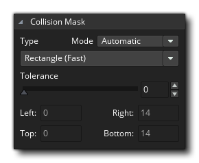

我们将通过介绍在 GameMaker Studio 2 中制作任何项目都需要的第一个资源 - 精灵 来开始“快速入门指南”的这部分内容。如 资源 部分所述，精灵是一个图像， 也可以是动画（不一定必须是），它会被绘制到屏幕上。 一般而言，一个精灵将与一个物体相关联，当然你可以只绘制一个精灵，无论是是在代码还是在房间编辑器 资源层 中绘制（后面会详细介绍）。你也可以创建一个精灵来用作 图块集，我们稍后也会详细介绍这个选项。
当你从 开始页面 创建一个新项目时，资源树将只包含你可能需要的资源的空文件夹，因此你需要 右键单击  精灵资源文件夹，然后选择 创建 选项。 IDE 将会创建一个新的精灵并为你打开精灵编辑器（如果精灵编辑器没有打开，只需双击
精灵资源文件夹，然后选择 创建 选项。 IDE 将会创建一个新的精灵并为你打开精灵编辑器（如果精灵编辑器没有打开，只需双击  新资源就可打开）：
新资源就可打开）：
你可以看到，窗口的左上方有精灵的名字。所有的精灵（以及其他资源）必须有一个自己的名字，以便你（和 GameMaker Studio 2）可以很容易地识别它们，但是你应该注意到这个名字实际上只是一个变量，它保存着一个“指向”此资源的ID值，在目前情况下是指向到一个精灵。 最好给每个精灵一个描述性的名字，这样你就可以一目了然地识别一个特定的资源是一个精灵还是一个物体或其他任何种类的资源，许多人通过给字符串 “spr” 加上前缀或后缀来做到这一点 - 例如“spr_Ball”。 请注意，对于资源名称仅限使用字母，数字和下划线符号“_”，所有资源必须以字母开头而不是数字开头。
我们将在本节的最后讨论精灵编辑器的其他功能，但首先我们需要解释如何绘制精灵。绘制精灵是在 图像编辑器 中进行的。图像编辑器是一个用于在游戏中创建图形的强大工具，通过单击“编辑图像”按钮打开。 我们不会深入介绍这里所提供的工具 - 在手册中的 图像编辑器 部分有详细说明 - 但是会简要说明一下：
我们不会深入介绍这里所提供的工具 - 在手册中的 图像编辑器 部分有详细说明 - 但是会简要说明一下：
- 左上角是帧视图 - 这里显示了你的精灵的帧图像，可以使用放大镜图标调整大小。
- 中央部分是绘图画布 - 这里显示了当前选定的帧并准备好绘制，你可以使用 鼠标中键
来平移或用 鼠标滚轮
- 右上方是基本的画笔 - 在这里你可以选择绘画的画笔，也可以添加任何自定义的画笔。
- 中间靠右是颜色选择器 - 在这里，我们可以选择用于左键和右键的颜色，因为你可以同时在画布上用左键和右键进行绘制。
- 在颜色选择器下面是工具 - 这些是各种绘图工具，包括刷子，填充，遮罩和形状工具。请注意，某些工具是沿对角线分割的，你需要点击对角线的某一侧来选择工具绘制轮廓线或填充形状。
- 在右下角是层视图 - 就像其他许多绘图工具一样，你可以创建不同的层来绘制图像，允许你尝试在各种位置使用各种颜色绘制，而不必担心会破坏层下面的内容。
在图像编辑器中绘制一些东西，花一些时间来熟悉这些选项，然后当你准备完成后关闭工作空间（这将保存图像），带你回到带有精灵编辑器的工作空间。我们将讨论精灵编辑器的一些其他功能，了解这些功能对于新手很重要。
你需要知道的第一件事是如何设置精灵的 原点。原点用于设置将我们的精灵“锚定”在房间内的位置，在现在的情境下，我们希望将其设置在中心。所以我们点击  从下拉菜单来设置原点并选择“中间中心”：
从下拉菜单来设置原点并选择“中间中心”： 你会看到预览图像中的原点十字线移动到精灵的中心。请注意，你只需单击预览图像即可将原点放置在所点击
你会看到预览图像中的原点十字线移动到精灵的中心。请注意，你只需单击预览图像即可将原点放置在所点击  的位置，也可以通过在顶部的x / y字段中添加值来手动设置原点位置。
的位置，也可以通过在顶部的x / y字段中添加值来手动设置原点位置。
另一个重要的事情是知道如何设置精灵的 碰撞遮罩 。碰撞遮罩是 GameMaker Studio 2 检查是否发生碰撞的区域，默认情况下设置为 矩形 （这也是最高效的办法）。 请注意，你可以将边界框的检测模式设置为自动（默认值）或手动。 如果你选择手动，你将能够设置的边界框上下左右边界的大小。 
使用除矩形以外的其他类型的碰撞遮罩多消耗一点性能，但是当制作一个小而简单的游戏时，这通常不是问题。 现在你可以关闭精灵编辑器了，因为我们将继续讨论 图块集。